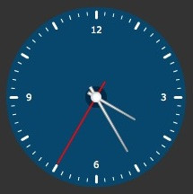
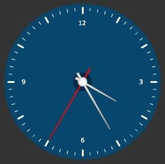
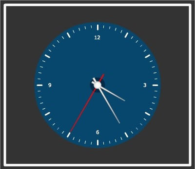

| Using Macros | |||||||||||||||||||||||||||||||||||||||||||||||||||||||||||||||||||||||||||||||||||||||||||||||||||||||||||||||||||||||||||||||||||||||||||||||||||||||||||||||||||||||
|
FusionWidgets XT (v3.2) introduces macros for annotations. Macros are pre-defined variables which assume values at run-time. These values are generated dynamically based on the positions of various visual elements of a chart or gauge. The macros can be set as the value for the x and y positions of an annotation or annotation group. For example, the macro $chartCenterX always provides the horizontal-center position of a chart or gauge. If you want to place a circle annotation at the center of a chart or gauge, set x="$chartCenterX" and y="$chartCenterY" while defining the circle annotation. The circle will be placed at the center of the chart or gauge. To enable macros in annotations, set the manageResize attribute to 1 in the <chart> element of the XML or in the chart Object of the JSON. |
|||||||||||||||||||||||||||||||||||||||||||||||||||||||||||||||||||||||||||||||||||||||||||||||||||||||||||||||||||||||||||||||||||||||||||||||||||||||||||||||||||||||
|
Let's take an example showing circles around an angular gauge. Suppose we have the following angular gauge that shows a clock:  We provide a circular blue background to the clock as well as a dark blue pivotal circle at the center of the clock. The XML/JSON for the same is: |
|||||||||||||||||||||||||||||||||||||||||||||||||||||||||||||||||||||||||||||||||||||||||||||||||||||||||||||||||||||||||||||||||||||||||||||||||||||||||||||||||||||||
<chart animation="0" bgColor="333333" baseFontColor="FFFFFF" bgAlpha="100" gaugeStartAngle="90" gaugeEndAngle="-270" lowerLimit="0" lowerLimitDisplay=" " upperLimit="12" majorTMNumber="12" majorTMThickness="3" majorTMColor="FFFFFF" majorTMHeight="7" minorTMNumber="4" minorTMColor="FFFFFF" minorTMHeight="4" placeValuesInside="1" tickValueStep="3" tickValueDistance="20" gaugeOuterRadius="95" gaugeInnerRadius="95" showShadow="0" pivotRadius="6" pivotFillColor="FFFFFF" annRenderDelay="0" showToolTip="0" manageResize="1" origW="270" origH="270" > <dials> <dial id="hrs" value="4" color="FFFFFF" baseWidth="3" topWidth="1" radius="50" rearExtension="10"/> <dial id="min" value="5" color="FFFFFF" baseWidth="3" topWidth="1" radius="70" rearExtension="13"/> <dial id="sec" value="7" color="FF0000" baseWidth="2" topWidth="1.5" alpha="100" radius="86" rearExtension="20" borderAlpha="0"/> </dials> <annotations> <annotationGroup id="Grp1" showBelow="1" x="$chartCenterX" y="$chartCenterY" > <annotation type="circle" x="0" y="0" color="07476D" radius="100" /> </annotationGroup> <annotationGroup id="Grp2" showBelow="1" x="0" y="0"> <annotation type="circle" radius="12" x="$chartCenterX" y="$chartCenterY" color="012A46" /> </annotationGroup> </annotations> </chart> {
|
|||||||||||||||||||||||||||||||||||||||||||||||||||||||||||||||||||||||||||||||||||||||||||||||||||||||||||||||||||||||||||||||||||||||||||||||||||||||||||||||||||||||
See it live! In the above data, you have done the following:
In an angular gauge the $chartCenterX macro and the $chartCenterY macro point to the center of the gauge (which is the common center position of the dials). Thus, the first annotation group is positioned at this central point. The center of the blue circle, with x and y set to 0, is also set to this center. The second annotation group is positioned at the top-left corner of the gauge. However, the center of the small circle is fixed to the center of the gauge using the relevant macros. Note: The values provided by the macros change dynamically when a chart or gauge resizes. Thus, irrespective of the size of the above rendered gauge, the annotations are always placed at the center of the gauge. Consider the image shown below:  See it live! Here, the gauge is rendered using a different size. The XML is not changed. However, the positions of the annotations have changed automatically. |
|||||||||||||||||||||||||||||||||||||||||||||||||||||||||||||||||||||||||||||||||||||||||||||||||||||||||||||||||||||||||||||||||||||||||||||||||||||||||||||||||||||||
| Where to define macros | |||||||||||||||||||||||||||||||||||||||||||||||||||||||||||||||||||||||||||||||||||||||||||||||||||||||||||||||||||||||||||||||||||||||||||||||||||||||||||||||||||||||
|
You can set macros in the following attributes of annotation groups and annotations:
You cannot set macros to the xShift, yShift, xScale, yScale, radius, yRadius and innerRadius attributes. List of macro names FusionWidgets supports the following macros for annotations and annotation groups:
|
|||||||||||||||||||||||||||||||||||||||||||||||||||||||||||||||||||||||||||||||||||||||||||||||||||||||||||||||||||||||||||||||||||||||||||||||||||||||||||||||||||||||
|
Macro names are case-sensitive. You need to ensure that the macro names are specified in proper case. For example, $canvasstarty will not work (and will log an error in the Debug window in case of Flash charts), unless it is specified as $canvasStartY. |
|||||||||||||||||||||||||||||||||||||||||||||||||||||||||||||||||||||||||||||||||||||||||||||||||||||||||||||||||||||||||||||||||||||||||||||||||||||||||||||||||||||||
| Creating macro expressions | |||||||||||||||||||||||||||||||||||||||||||||||||||||||||||||||||||||||||||||||||||||||||||||||||||||||||||||||||||||||||||||||||||||||||||||||||||||||||||||||||||||||
|
You can also add numeric (integer) values to the macros or subtract numeric (integer) values from macros to offset the annotations. For example, you may want to draw a rectangle 10 pixels away from the chart borders like the image shown below:  You can define the rectangle as shown in the snippet below: <annotation type="rectangle"
x="$chartStartX+10" y="$chartStartY+10"
toX="$chartEndX-10" toY="$chartEndY-10"
showBorder="1" borderThickness="5" borderColor="FFFFFF" fillAlpha="0" fillColor="07476D" />
"items": [ |
|||||||||||||||||||||||||||||||||||||||||||||||||||||||||||||||||||||||||||||||||||||||||||||||||||||||||||||||||||||||||||||||||||||||||||||||||||||||||||||||||||||||
See it live! In the above defined rectangle annotation we have applied macro expressions as described below:
You can only use + or - operators to create a macro expression. You are required to use at least one macro name to create a macro expression. Common mathematical expressions like "30+10-5", which do not contain a macro, are not allowed. Important Note: While using the dynamic resizing feature, the values provided by macros are not scaled. Rather, these values are re-set with the new values provided by the resized chart. However, the numeric values present in the macro expressions are scaled. For example, the value 10 in the expression $chartStartY+10 is scaled while using dynamic resizing. If do not want this numeric part to be scaled while using the dynamic resizing feature, you need to prefix the number with $. For example, the value 10 in the expression $chartStartY+$10 is NOT scaled while using dynamic resizing. |
|||||||||||||||||||||||||||||||||||||||||||||||||||||||||||||||||||||||||||||||||||||||||||||||||||||||||||||||||||||||||||||||||||||||||||||||||||||||||||||||||||||||